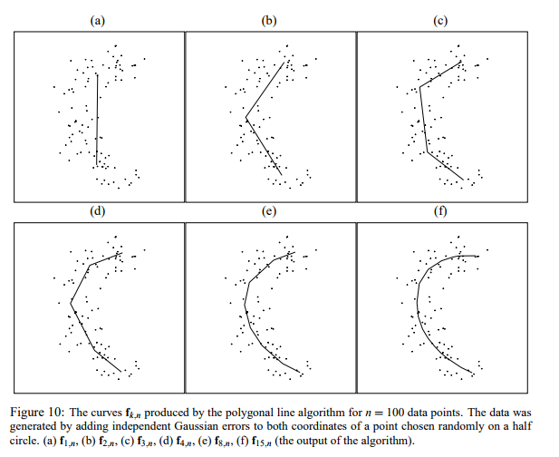

线段处理算法
标签：
量化
线段处理
polyline Fitting of Planar Points under Min-Sum Criteria
The Polygonal Line Algorithm

Ramer–Douglas–Peucker algorithm
算法实现https://pypi.org/project/rdp/
目录
线段处理
build:
__BUILD_VERSION__